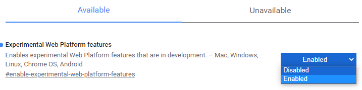

二酸化炭素の測定
このページは紅茶屋さんが、夜なべして作った二酸化炭素センサー用のページです。 ブラウザのバージョンアップ等により予告なくサービスを終了することがあります。
動作環境の確認
ブラウザ Google Chromeのバージョン80以上が必要です
あなたのブラウザはです。
 最新版のGoogle Chrome ver80以上をダウンロードしてください iPhone用のChromeは現在、動作対象外です。
最新版のGoogle Chrome ver80以上をダウンロードしてください iPhone用のChromeは現在、動作対象外です。
ブラウザのタイプ
ブラウザのバージョン
ブラウザのバージョン
ネット環境 HTTPS接続、Web Serial APIの動作設定が必要です
SSL接続が必要です.
HTTPSアドレスにアクセスしなおしてください
ブラウザの新しいタブを開いてURLバーに chrome://flags/を入力してアクセスしてください。
#enable-experimental-web-platform-featuresのフラグを検索して、DisabledをEnabledに変更しRelaunchボタンを押してください。

HTTPS接続
Web Serial API
Web Serial API
ポケット二酸化炭素センサーを接続してください